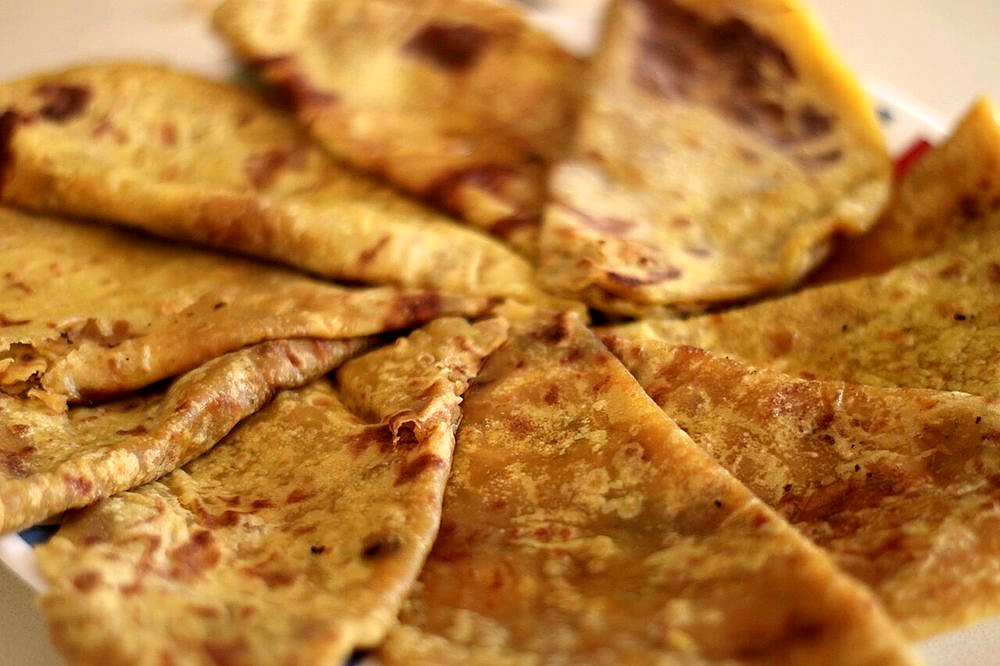

Prep45 min
Cook40 min
Active85 min
Plus30 min resting
Serves8
Difficultyadvanced
Contains: milk, gluten, tree nuts
Checked against the ingredient list for ten allergens: milk, egg, fish, crustaceans, tree nuts, peanuts, sesame, mustard, soy and gluten. Brands vary, so read the label on anything new to you.
Ingredients
Quantities for 8.
- 300g Maida
- 180g, melted Gheefor the dough, the filling and the frying
- 250g, rinsed Toor Dal
- 220g Sugar
- 50g, coarsely ground Almonds
- 30g, coarsely ground Pistachiosoptional
- 60g, crumbled Khoyaenriches the fillingoptional
- 8 pods, seeds ground Cardamom
- 1/2 tsp, grated Nutmeg
- 1 tbsp Rose Wateroptional
- 1/2 tsp Salt
- 150ml, for the dough Water
Cookware
stovetop, tawa, pressure cooker, blender
Before you start
- Make the filling a day ahead if you can. It firms up in the fridge and is far easier to enclose cold.
- The dough needs a full 30 minutes covered rest before rolling, or it will fight you and tear.
- Work with 60g of dough and 60g of filling per pori. Weigh them, because uneven parcels burst.
Method
- Pressure cook the toor dal with 500ml water for 4 whistles, until completely soft, then drain off every drop of liquid.Wet dal makes a filling that will not hold. Drain it hard and dry it out in the pan if you must.
- Blend or mash the dal to a smooth paste while still warm.
- Cook the dal paste with the sugar and 2 tbsp ghee over low heat, stirring, 15-18 minutes, until it pulls away from the pan in one mass.Keep stirring and keep the heat low. Sugar and dal catch on the base and taste burnt through the whole batch.
- Take it off the heat and fold in the ground almonds, pistachios, khoya, cardamom, nutmeg and rose water. Cool completely, then divide into 8 balls.
- For the dough, rub 60g melted ghee and the salt into the maida until it clumps when squeezed, then add the water a little at a time to make a firm, smooth dough.
- Knead 5 minutes, coat with a spoon of ghee, cover and rest 30 minutes.
- Divide the dough into 8, roll each into a 12cm disc, place a filling ball in the centre and gather the edges over the top, pinching them shut.
- Flatten each parcel gently and roll it out to about 18cm, sealed side down, using light even pressure.Roll from the centre outward and stop the moment the filling shows through. A burst pori leaks sugar into the pan.
- Cook on a medium tawa 2-3 minutes a side until pale gold flecks appear.
- Spoon a tablespoon of ghee around each pori and fry 1-2 minutes more per side until deep golden and crisp.
- Cool on a rack. They crisp as they cool and are traditionally cut into wedges.
Storage
Keeps a week in an airtight tin at room temperature and a month refrigerated. Warm briefly on a dry tawa before serving to bring back the crispness.
Nutrition Good estimate
Medium protein: 15 g a serving, 9% of the calories
| Per serving137 g | Per 100 g | |
|---|---|---|
| Calories | 642 kcal | 470 kcal |
| Protein | 14.8 g | 11 g |
| Carbohydrate | 81.1 g | 59 g |
| of which sugars | 31.0 g | 23 g |
| Fibre | 6.9 g | 5 g |
| Fat | 30.1 g | 22 g |
| of which saturated | 15.8 g | 12 g |
| of which unsaturated | 12.5 g | 9 g |
Estimated from raw ingredients using USDA FoodData Central.
Times, yields, allergens and nutrition are guidance. Use your own judgement on doneness and on storing. More in About.